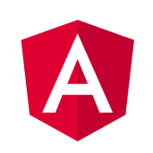
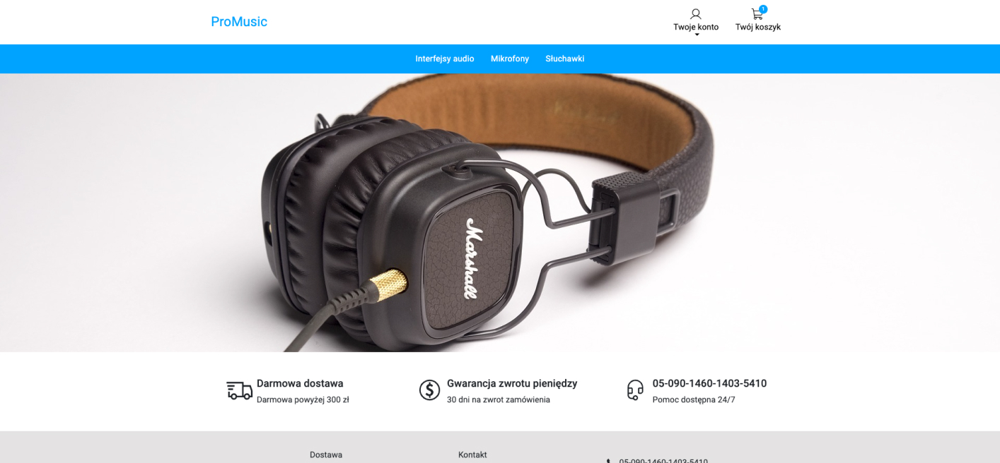
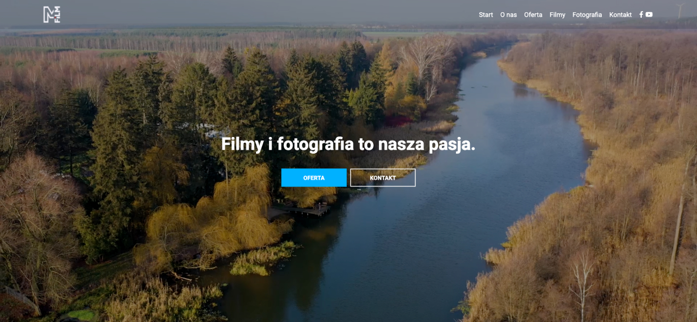

Programista
Wspólne programowanie
Praca zespołowa
O mnie
Jestem programistą, który chce się rozwijać głównie w dziedzinie front-end. Niedawno zacząłem przygodę ze światem książek. Z czasem chciałbym poświęcać na nie więcej czasu :). Jestem osobą, która jest ciekawa wiedzy - nie tylko w obszarze front-end’u ale też w innych dziedzinach.
Tym się zajmuję
Tworzenie aplikacji webowych
Tworzenie stron
Technologie
JavaScript

Angular
Java
Portfolio


MFILM
HTML, CSS, JavaScript, framework PHP.